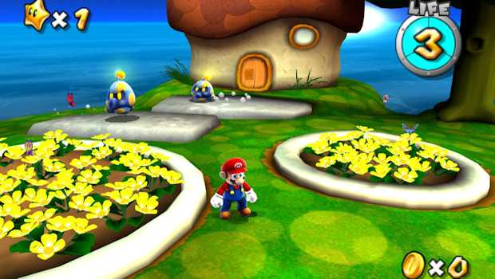

| description: Gamecube and Wii Emulator, Git Version url: http://www.dolphin-emu.org/ license: 'GPL2' depends: bluez ffmpeg libao lzo2 miniupnpc polarssl portaudio-svn sdl2 sfml soundtouch wxgtk xdg-utils pulseaudio makedepends: created_at: Sunday Feb 01, 2015 at 00:28 pushed_at: Tuesday Sep 15, 2015 at 14:47 |  |